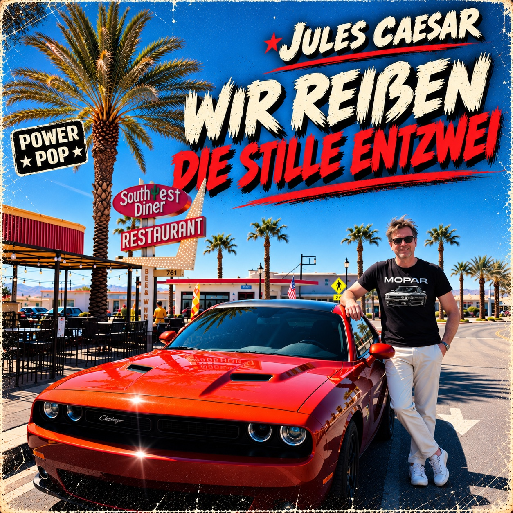
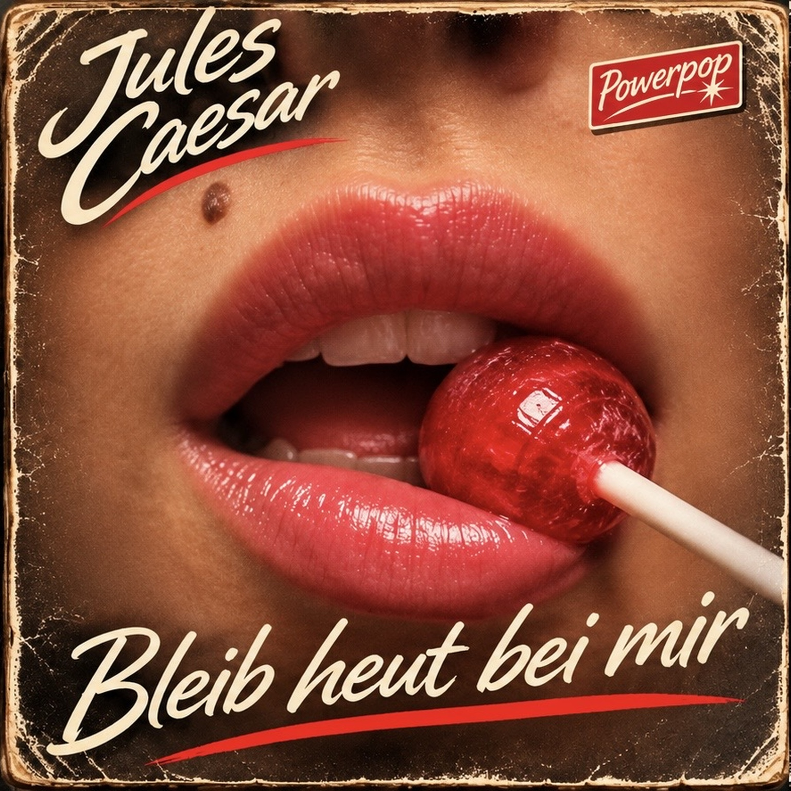
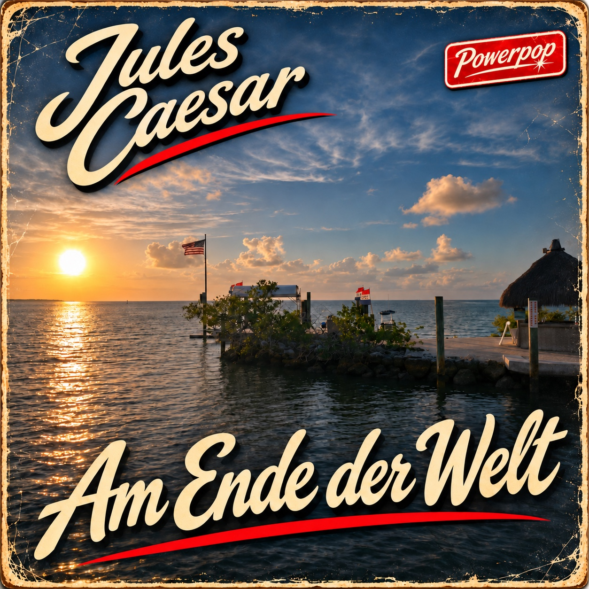

Jules Caesar

Veröffentlichung: Oktober 2026
Die erste Veröffentlichung von Jules Caesar verbindet energiegeladenen deutschsprachigen Power-Pop mit einem instrumentalen Ritt durch die Mojave-Wüste.

Veröffentlichung: November 2026
Jetzt erhältlich auf Spotify, Apple Music, Amazon Music und allen gängigen Streaming-Plattformen.

Geplante Veröffentlichung: Dezember 2026
Music & Videos
Über Jules Caesar
Amerikanische Highways, flimmernde Neonlichter und die Sehnsucht nach dem perfekten Popsong.
Jules Caesar verbindet eingängige Melodien mit elektrischen Gitarren, Fernweh mit Lebensfreude und einen Hauch Nostalgie mit neuen musikalischen Ideen.
Musik für lange Autofahrten, offene Fenster und die Momente, in denen man einfach ein bisschen lauter dreht.
Spotify-Künstlerprofil:
Jules Caesar auf Spotify